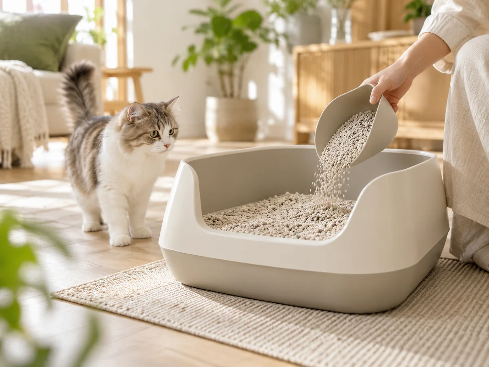
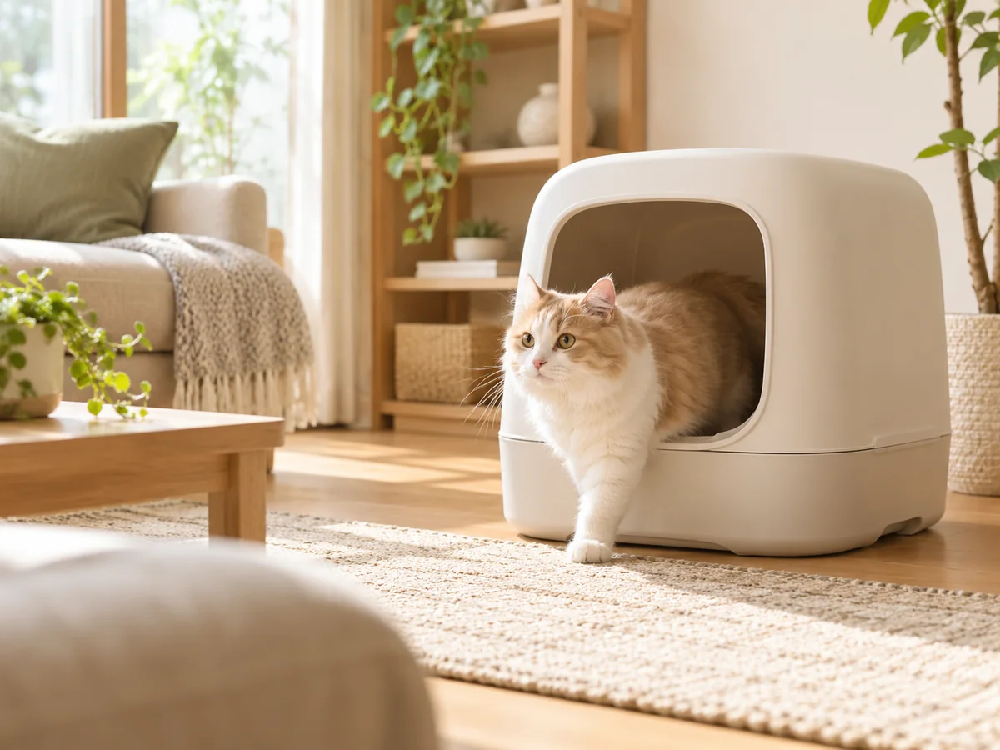

CAT GOODS COMPARISON
うちの猫に合うものを、
比べて、選ぼう。
猫用品選びを、もっとやさしく。
特徴や使いやすさを比べて、
暮らしに合うひとつへ。
猫砂から、毎日の猫用品へ。

FIND YOUR CATEGORY
何を比較しますか？
気になるジャンルから、商品選びを始めましょう。

01比較できます
猫砂
消臭・固まり・飛び散り。
毎日使う一袋を、条件で比較。
おから猫砂・全12商品を比較

02比較できます
猫トイレ
サイズ・形・お掃除のしやすさ。
猫にも人にも使いやすいものを。
おすすめ4タイプを比較
比較するジャンルは、これから少しずつ増えていきます。
KNOW & PLAY
猫をもっと知る・楽しむ
商品選びの合間に、猫との暮らしをもう少し。

CAT LIFE GUIDE
猫との暮らしを、もっと快適に。
猫を迎える前の疑問から、毎日の暮らしや用品選びまで。
知っておきたいことを、わかりやすくまとめています。
OUR APPROACH
人気だけでなく、暮らしに合うかで。
商品の特徴を整理して、違いが分かる比較を。
猫の体格や毎日のお手入れも考えながら、納得して選べる情報を届けます。